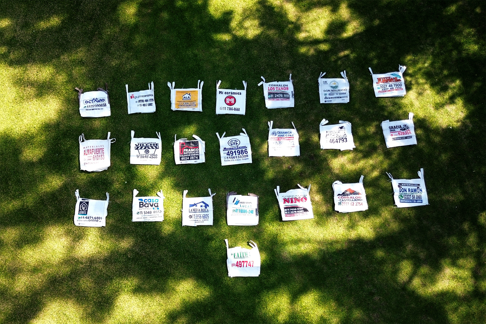

Video final
Una pieza breve, pensada para agradecer y al mismo tiempo reforzar presencia. El uso del dron no aparece como un efecto aislado, sino como un recurso que ordena la mirada y le da otra escala al mensaje.

Una pieza breve y visualmente potente, pensada como agradecimiento a proveedores. En este proyecto trabajamos una propuesta dinámica, limpia y directa, donde el uso del dron fue clave para darle escala, presencia y una mirada distinta al mensaje.
Este proyecto surgió a partir de una necesidad concreta: crear un video corto de agradecimiento para los proveedores de Kevin Bava. La intención no era hacer algo complejo, sino construir una pieza simple, bien resuelta y con una impronta visual que elevara el mensaje.
Desde Andina trabajamos el video pensando en cómo darle más fuerza a esa idea de reconocimiento y cercanía. El recurso del dron fue central para eso: permitió sumar amplitud, movimiento y una perspectiva más potente, transformando una pieza breve en una experiencia visual más memorable.
Una pieza breve, pensada para agradecer y al mismo tiempo reforzar presencia. El uso del dron no aparece como un efecto aislado, sino como un recurso que ordena la mirada y le da otra escala al mensaje.
Imágenes del proyecto y del rodaje. Tomas aéreas, momentos de grabación y escenas que muestran cómo el dron permitió construir una pieza más amplia, dinámica y visualmente atractiva.
El punto de partida fue claro: crear un video corto de agradecimiento. Desde ahí trabajamos una pieza directa, sin exceso de información, donde el tono general acompañara la intención del mensaje.
El dron fue el recurso central del proyecto. Nos permitió sumar recorrido, amplitud y una perspectiva más fuerte, elevando visualmente una pieza que, desde lo narrativo, buscaba ser breve y concreta.
En la edición buscamos claridad, dinamismo y una lectura rápida. El objetivo fue que cada plano tuviera intención y que el resultado final se sintiera prolijo, actual y visualmente sólido.

El resultado fue un video corto, claro y visualmente atractivo, donde el dron aportó mucho más que una vista aérea: ayudó a construir una percepción más profesional, más amplia y más cuidada de la pieza.
En proyectos así, donde el mensaje es simple, la diferencia muchas veces está en cómo se lo muestra. Y ahí el recurso visual fue lo que terminó de darle valor, dinamismo y recordación.
A veces una pieza no necesita mucho. Solo la perspectiva correcta.

{kind=link}
{kind=link}
{kind=link}
{kind=link}
{kind=link}